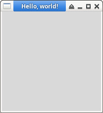

參考資訊：
https://github.com/eserte/perl-tk
https://bin-co.com/tcl/tutorial/contents.php
https://metacpan.org/dist/Tk/view/pod/UserGuide.pod
https://www.perl.com/pub/1999/10/perltk/index.html/
main.pl
use Tk;
my $mw = MainWindow->new();
$mw->title('Hello, world!');
MainLoop;
執行
$ perl main.pl
